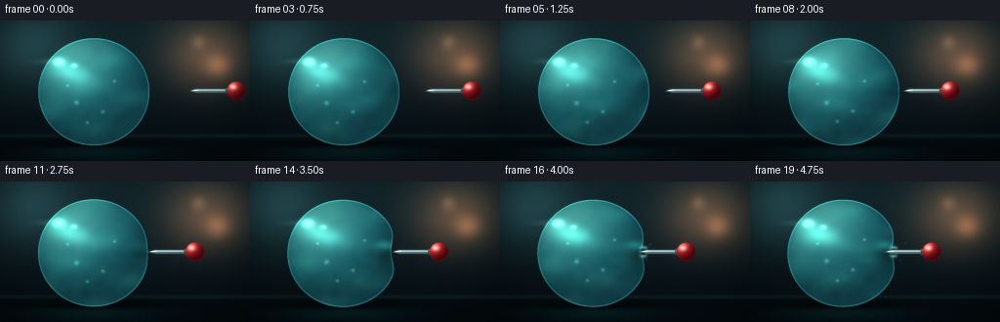
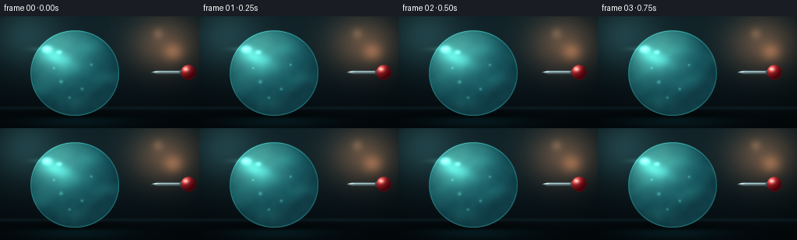
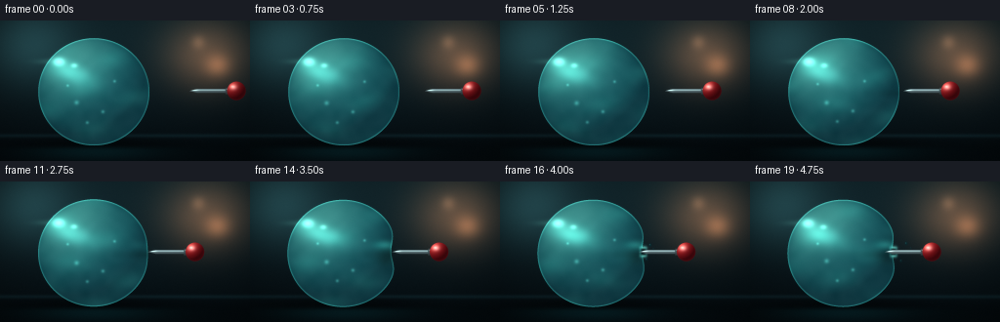
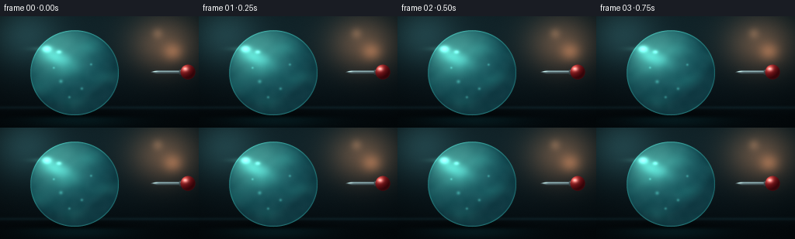

CODING AGENTS AS PIXEL WORLD MODELS
traex/DeepSeek-V4.1-Flash · phygen_024
点击播放 · 原生 RGB 像素
逐轮保存的候选
回放视频、检查图与代码变化。
每份候选均可单独播放。实际图片检查记录在下方工具轨迹中。
候选 01播放与检查图
点击播放 · 原生 RGB 像素


展开代码变化
--- 上一保存版本
+++ 本次保存版本
@@ -0,0 +1,444 @@
+from pathlib import Path
+
+import cv2
+import numpy as np
+from scipy.ndimage import distance_transform_edt, gaussian_filter, map_coordinates
+
+import artifact_io
+
+
+W, H, FPS, N = 256, 144, 4.0, 20
+SUPERSAMPLE = 4
+RW, RH = W * SUPERSAMPLE, H * SUPERSAMPLE
+
+CX, CY = 96.0, 73.0
+RX, RY = 57.0, 55.0
+PIN_Y = 72.0
+
+
+def smoothstep(edge0, edge1, x):
+ t = np.clip((x - edge0) / (edge1 - edge0), 0.0, 1.0)
+ return t * t * (3.0 - 2.0 * t)
+
+
+def gauss2(x, y, cx, cy, sx, sy):
+ return np.exp(-0.5 * (((x - cx) / sx) ** 2 + ((y - cy) / sy) ** 2))
+
+
+def sample_bilinear(image, xs, ys):
+ result = np.empty(xs.shape + (3,), dtype=np.float32)
+ for channel in range(3):
+ result[..., channel] = map_coordinates(
+ image[..., channel],
+ [ys, xs],
+ order=1,
+ mode="nearest",
+ prefilter=False,
+ )
+ return result
+
+
+def make_background(x, y):
+ vertical = smoothstep(0.0, H, y)
+ top = np.array([18.0, 38.0, 44.0], dtype=np.float32)
+ bottom = np.array([5.0, 13.0, 17.0], dtype=np.float32)
+ image = top[None, None, :] * (1.0 - vertical[..., None])
+ image += bottom[None, None, :] * vertical[..., None]
+
+ # A soft studio light and out-of-focus practicals create a readable
+ # background through the water without competing with the interaction.
+ warm = gauss2(x, y, 213.0, 34.0, 30.0, 25.0)
+ image += warm[..., None] * np.array([92.0, 54.0, 32.0], dtype=np.float32)
+ bokeh1 = gauss2(x, y, 223.0, 46.0, 9.0, 8.0)
+ bokeh2 = gauss2(x, y, 203.0, 22.0, 5.0, 5.0)
+ image += bokeh1[..., None] * np.array([78.0, 44.0, 25.0], dtype=np.float32)
+ image += bokeh2[..., None] * np.array([44.0, 29.0, 19.0], dtype=np.float32)
+
+ cool = gauss2(x, y, 31.0, 23.0, 31.0, 28.0)
+ image += cool[..., None] * np.array([22.0, 43.0, 44.0], dtype=np.float32)
+
+ floor = smoothstep(116.0, 132.0, y)
+ floor_tint = np.array([3.0, 9.0, 12.0], dtype=np.float32)
+ image = image * (1.0 - 0.72 * floor[..., None])
+ image += floor_tint[None, None, :] * 0.72 * floor[..., None]
+
+ horizon = np.exp(-0.5 * ((y - 118.0) / 1.4) ** 2)
+ image += horizon[..., None] * np.array([7.0, 17.0, 19.0], dtype=np.float32)
+ return image
+
+
+def make_texture_bank(rng):
+ textures = []
+ for size in ((24, 42), (18, 31)):
+ coarse = rng.random(size).astype(np.float32)
+ fine = cv2.resize(coarse, (RW, RH), interpolation=cv2.INTER_CUBIC)
+ textures.append(gaussian_filter(fine, 2.2 * SUPERSAMPLE))
+ return textures
+
+
+def pin_tip_positions():
+ return np.array(
+ [
+ 194.0,
+ 189.0,
+ 184.0,
+ 179.0,
+ 174.0,
+ 169.0,
+ 164.0,
+ 160.0,
+ 157.0,
+ 155.0,
+ 153.5,
+ 151.5,
+ 149.5,
+ 147.5,
+ 145.5,
+ 144.0,
+ 142.5,
+ 141.0,
+ 139.5,
+ 138.0,
+ ],
+ dtype=np.float32,
+ )
+
+
+def render_frame(
+ frame_index,
+ x,
+ y,
+ background,
+ textures,
+ tips,
+ rng,
+):
+ t = frame_index / FPS
+ tip_x = float(tips[frame_index])
+ base_right = CX + RX
+
+ # Contact begins when the tip reaches the rightmost membrane point.
+ raw_press = np.clip(base_right - tip_x, 0.0, 12.0)
+ punctured = frame_index >= 15
+ puncture_progress = smoothstep(15.0, 17.0, float(frame_index))
+
+ if not punctured:
+ depression = raw_press
+ boundary_center = base_right - depression
+ hole_x = boundary_center
+ else:
+ # Once the surface is pierced, the membrane relaxes slightly around
+ # the shaft. The needle continues inside while the hole remains at
+ # the crossing point.
+ depression = 6.7 - 0.35 * puncture_progress
+ boundary_center = base_right - depression
+ hole_x = boundary_center + 0.15
+
+ contact = np.clip(depression / 8.0, 0.0, 1.0)
+ proximity = np.clip((166.0 - tip_x) / 12.0, 0.0, 1.0)
+
+ # Slight displacement of the water volume as pressure builds.
+ center_x = CX - 0.12 * depression
+ center_y = CY + 0.08 * depression
+ dy_norm = (y - center_y) / RY
+ ellipse_inside = ((x - center_x) / RX) ** 2 + dy_norm**2 <= 1.0
+ base_surface = center_x + RX * np.sqrt(np.clip(1.0 - dy_norm**2, 0.0, 1.0))
+ dimple_profile = np.exp(-0.5 * ((y - PIN_Y) / 11.5) ** 2)
+ right_surface = base_surface - depression * dimple_profile
+ body_mask = ellipse_inside & (x <= right_surface)
+
+ nx = (x - center_x) / RX
+ ny = (y - center_y) / RY
+ nz = np.sqrt(np.clip(1.0 - nx**2 - ny**2, 0.0, 1.0))
+
+ # Refraction is strongest near the curved silhouette and almost absent
+ # at the center, where the viewer looks straight through the balloon.
+ lens = (1.0 - nz) ** 1.15
+ src_x = center_x + (x - center_x) * (0.78 - 0.13 * lens) + nx * (2.2 + 2.2 * lens)
+ src_y = center_y + (y - center_y) * (0.78 - 0.13 * lens) + ny * (1.8 + 2.2 * lens)
+ refracted = sample_bilinear(background, src_x, src_y)
+
+ light = np.array([-0.43, -0.62, 0.66], dtype=np.float32)
+ light /= np.linalg.norm(light)
+ diffuse = np.clip(nx * light[0] + ny * light[1] + nz * light[2], 0.0, 1.0)
+ fresnel = np.clip(1.0 - nz, 0.0, 1.0) ** 2.1
+
+ deep = np.array([8.0, 55.0, 66.0], dtype=np.float32)
+ mid = np.array([24.0, 129.0, 137.0], dtype=np.float32)
+ bright = np.array([91.0, 207.0, 198.0], dtype=np.float32)
+ water = deep[None, None, :] + diffuse[..., None] * (mid - deep)[None, None, :]
+ water += (diffuse[..., None] ** 3.2) * (bright - mid)[None, None, :]
+
+ texture_a = textures[0]
+ texture_b = textures[1]
+ swirl_x = x + 4.0 * np.sin(y * 0.07 + t * 0.9)
+ swirl_y = y + 3.0 * np.sin(x * 0.055 - t * 0.7)
+ caustic = (
+ 0.58
+ + 0.23 * np.sin(swirl_x * 0.085 + swirl_y * 0.11 + t * 1.7)
+ + 0.19 * np.sin(swirl_y * 0.17 - swirl_x * 0.045 - t * 1.15)
+ )
+ caustic = np.clip(caustic, 0.0, 1.0) ** 3.0
+ water += caustic[..., None] * np.array([10.0, 29.0, 24.0], dtype=np.float32)
+ water += ((texture_a - 0.5) * 8.0 + (texture_b - 0.5) * 5.0)[..., None]
+
+ alpha = 0.70 + 0.17 * fresnel
+ body = refracted * (1.0 - alpha[..., None]) + water * alpha[..., None]
+
+ # Broad latex highlight and its small, harder secondary reflection.
+ rot_x = (x - (center_x - 24.0)) * 0.94 + (y - (center_y - 20.0)) * 0.34
+ rot_y = -(x - (center_x - 24.0)) * 0.34 + (y - (center_y - 20.0)) * 0.94
+ broad = np.exp(-0.5 * ((rot_x / 17.0) ** 2 + (rot_y / 7.0) ** 2))
+ hotspot = gauss2(x, y, center_x - 36.0, center_y - 31.0, 4.1, 2.8)
+ secondary = gauss2(x, y, center_x - 20.0, center_y - 27.0, 2.2, 1.5)
+ body += broad[..., None] * np.array([32.0, 75.0, 65.0], dtype=np.float32)
+ body += hotspot[..., None] * np.array([91.0, 135.0, 121.0], dtype=np.float32)
+ body += secondary[..., None] * np.array([56.0, 90.0, 78.0], dtype=np.float32)
+
+ # Distorted membrane around the contact point: a dark pressure lobe,
+ # a lit upper fold, and a compressed lower fold.
+ if contact > 0.0:
+ lobe = gauss2(x, y, boundary_center - 4.0, PIN_Y + 2.5, 8.0, 11.0)
+ body *= (1.0 - (0.23 * contact * lobe))[..., None]
+ upper_fold = gauss2(x, y, boundary_center - 7.0, PIN_Y - 7.0, 8.0, 3.2)
+ lower_shadow = gauss2(x, y, boundary_center - 7.0, PIN_Y + 8.0, 7.0, 3.6)
+ body += upper_fold[..., None] * contact * np.array(
+ [20.0, 62.0, 55.0], dtype=np.float32
+ )
+ body *= (1.0 - (0.18 * contact * lower_shadow))[..., None]
+
+ # Soft floor contact shadow and a restrained reflection.
+ shadow = gauss2(x, y, center_x + 1.0, 127.0, 54.0, 7.0)
+ background_shadowed = background * (1.0 - 0.40 * shadow[..., None])
+ reflection = gauss2(x, y, center_x, 134.0, 47.0, 6.5)
+ reflection *= smoothstep(126.0, 133.0, y)
+ background_shadowed += reflection[..., None] * np.array(
+ [3.0, 20.0, 22.0], dtype=np.float32
+ )
+
+ image = background_shadowed.copy()
+ image[body_mask] = body[body_mask]
+
+ # Fresnel membrane edge and a thin darker exterior contact line.
+ dist_in = distance_transform_edt(body_mask).astype(np.float32)
+ dist_out = distance_transform_edt(~body_mask).astype(np.float32)
+ rim_inner = np.exp(-0.5 * ((dist_in - 2.1) / 2.0) ** 2) * body_mask
+ rim_outer = np.exp(-0.5 * (dist_out / 2.6) ** 2) * (~body_mask)
+ upper_rim = np.clip((y - (center_y - 8.0)) / -48.0, 0.0, 1.0)
+ lower_rim = np.clip((y - (center_y + 8.0)) / 47.0, 0.0, 1.0)
+ image += rim_outer[..., None] * np.array([0.0, 5.0, 5.0], dtype=np.float32)
+ image += rim_inner[..., None] * (
+ np.array([19.0, 54.0, 48.0], dtype=np.float32)[None, None, :]
+ + upper_rim[..., None] * np.array([16.0, 28.0, 22.0], dtype=np.float32)
+ + lower_rim[..., None] * np.array([8.0, 22.0, 21.0], dtype=np.float32)
+ )
+
+ # Fine, bright rim along the upper-left arc.
+ angle_highlight = gauss2(x, y, center_x - 43.0, center_y - 31.0, 11.0, 2.0)
+ angle_highlight *= smoothstep(0.2, 1.0, fresnel)
+ image += angle_highlight[..., None] * np.array([18.0, 35.0, 30.0], dtype=np.float32)
+
+ # Tiny suspended bubbles follow the water motion subtly.
+ bubble_specs = [
+ (78.0, 83.0, 1.6, 0.7),
+ (105.0, 92.0, 1.2, 1.1),
+ (117.0, 61.0, 1.0, 0.8),
+ (69.0, 65.0, 0.9, 1.5),
+ (89.0, 103.0, 1.1, 1.3),
+ ]
+ for bx, by, br, phase in bubble_specs:
+ by_anim = by + 1.6 * np.sin(t * 0.8 + phase)
+ bubble = np.exp(-0.5 * (((x - bx) / br) ** 2 + ((y - by_anim) / br) ** 2))
+ bubble *= body_mask
+ ring = np.exp(
+ -0.5 * (((x - bx) / br - 0.55) ** 2 + ((y - by_anim) / br) ** 2)
+ )
+ image += bubble[..., None] * np.array([18.0, 39.0, 35.0], dtype=np.float32)
+ image += ring[..., None] * np.array([16.0, 29.0, 26.0], dtype=np.float32)
+
+ # Needle shadow falls onto the water as the pin closes in.
+ if proximity > 0.0:
+ pin_shadow = np.exp(-0.5 * ((y - (PIN_Y + 2.8)) / 2.8) ** 2)
+ pin_shadow *= np.exp(-0.5 * ((x - (tip_x + 15.0)) / 24.0) ** 2)
+ pin_shadow *= body_mask * proximity
+ image *= (1.0 - 0.24 * pin_shadow[..., None])
+
+ # The puncture is a small wet opening, not a burst. Its bright rim stays
+ # visible above and below the shaft once the tip has crossed the surface.
+ if punctured:
+ opening = np.exp(
+ -0.5 * (((x - hole_x) / 2.25) ** 4 + ((y - PIN_Y) / 4.2) ** 4)
+ )
+ wet_ring = np.exp(
+ -0.5
+ * (
+ ((x - hole_x) / (2.25 + 0.9)) ** 4
+ + ((y - PIN_Y) / (4.2 + 0.9)) ** 4
+ )
+ )
+ wet_ring = np.clip(wet_ring - opening, 0.0, 1.0)
+ image *= (1.0 - 0.88 * opening[..., None])
+ image += opening[..., None] * np.array([2.0, 12.0, 15.0], dtype=np.float32)
+ image += wet_ring[..., None] * np.array([34.0, 90.0, 83.0], dtype=np.float32)
+
+ upper_lip = gauss2(x, y, hole_x + 0.4, PIN_Y - 4.3, 2.2, 1.0)
+ lower_lip = gauss2(x, y, hole_x + 0.2, PIN_Y + 4.2, 2.0, 1.0)
+ image += (upper_lip + lower_lip)[..., None] * np.array(
+ [66.0, 123.0, 112.0], dtype=np.float32
+ )
+
+ # Metal shaft and conical tip.
+ tip_base = tip_x + 8.0
+ head_x = tip_x + 48.0
+ shaft_start = tip_base - 0.3
+ shaft_end = head_x - 9.5
+ signed_shaft = (y - PIN_Y) / 2.15
+ shaft_mask = (
+ (x >= shaft_start)
+ & (x <= shaft_end)
+ & (np.abs(y - PIN_Y) <= 2.15)
+ )
+ tip_mask = (
+ (x >= tip_x)
+ & (x <= tip_base)
+ & (np.abs(y - PIN_Y) <= 2.15 * (x - tip_x) / (tip_base - tip_x))
+ )
+ metal_mask = shaft_mask | tip_mask
+ shaft_light = np.clip(0.83 - 0.42 * signed_shaft, 0.0, 1.0)
+ metal = np.array([91.0, 112.0, 117.0], dtype=np.float32)[None, None, :]
+ metal = metal * (0.42 + 0.78 * shaft_light[..., None])
+ metal += gauss2(x, y, (shaft_start + shaft_end) * 0.5, PIN_Y - 0.75, 35.0, 0.42)[
+ ..., None
+ ] * np.array([91.0, 105.0, 100.0], dtype=np.float32)
+ tip_glint = gauss2(x, y, tip_x + 5.8, PIN_Y - 0.55, 2.1, 0.45)
+ metal += tip_glint[..., None] * np.array([88.0, 98.0, 90.0], dtype=np.float32)
+ image[metal_mask] = metal[metal_mask]
+
+ # A compact metal collar between the shaft and the red pin head.
+ collar_mask = (
+ (np.abs(x - (head_x - 9.3)) <= 2.0)
+ & (np.abs(y - PIN_Y) <= 3.7)
+ )
+ collar_y = np.abs(y - PIN_Y) / 3.7
+ collar_col = (
+ np.array([62.0, 76.0, 80.0], dtype=np.float32)[None, None, :]
+ * (0.65 + 0.45 * (1.0 - collar_y[..., None]))
+ )
+ collar_glint = gauss2(x, y, head_x - 9.3, PIN_Y - 1.7, 1.0, 0.55)
+ collar_col += collar_glint[..., None] * np.array(
+ [83.0, 92.0, 84.0], dtype=np.float32
+ )
+ image[collar_mask] = collar_col[collar_mask]
+
+ # Glossy red spherical pin head.
+ head_r = 9.6
+ hx = (x - head_x) / head_r
+ hy = (y - PIN_Y) / head_r
+ head_mask = hx**2 + hy**2 <= 1.0
+ hz = np.sqrt(np.clip(1.0 - hx**2 - hy**2, 0.0, 1.0))
+ head_light = np.clip(
+ hx * -0.48 + hy * -0.62 + hz * 0.62,
+ 0.0,
+ 1.0,
+ )
+ red_dark = np.array([72.0, 5.0, 12.0], dtype=np.float32)
+ red_mid = np.array([177.0, 28.0, 35.0], dtype=np.float32)
+ red_hi = np.array([244.0, 89.0, 84.0], dtype=np.float32)
+ head_col = red_dark[None, None, :] + head_light[..., None] * (
+ red_mid - red_dark
+ )[None, None, :]
+ head_col += (head_light[..., None] ** 4.5) * (red_hi - red_mid)[None, None, :]
+ head_spec = gauss2(x, y, head_x - 3.1, PIN_Y - 3.8, 2.5, 1.9)
+ head_spec += 0.42 * gauss2(x, y, head_x - 4.0, PIN_Y - 4.4, 1.2, 0.8)
+ head_col += head_spec[..., None] * np.array(
+ [103.0, 126.0, 120.0], dtype=np.float32
+ )
+ head_rim = np.clip(1.0 - hz, 0.0, 1.0) ** 2.5
+ head_col += head_rim[..., None] * np.array([34.0, 12.0, 13.0], dtype=np.float32)
+ image[head_mask] = head_col[head_mask]
+
+ # A few small water beads communicate that only the outer layer has
+ # opened. They emerge above and below the shaft, never as a full spray.
+ if frame_index >= 16:
+ p = float(frame_index - 15)
+ droplets = [
+ (hole_x + 5.0 + 2.0 * p, PIN_Y - 6.5 - 0.55 * p, 1.15, 0.90),
+ (hole_x + 2.0 + 1.4 * p, PIN_Y + 7.1 + 0.50 * p, 0.90, 0.72),
+ (hole_x + 8.0 + 2.4 * p, PIN_Y - 3.0 - 0.25 * p, 0.62, 0.54),
+ ]
+ for dx, dy, radius, opacity in droplets:
+ drop = np.exp(
+ -0.5
+ * (
+ ((x - dx) / (radius * 0.82)) ** 2
+ + ((y - dy) / radius) ** 2
+ )
+ )
+ glint = gauss2(
+ x,
+ y,
+ dx - radius * 0.35,
+ dy - radius * 0.35,
+ radius * 0.30,
+ radius * 0.30,
+ )
+ image = image * (1.0 - opacity * drop[..., None])
+ image += drop[..., None] * np.array(
+ [7.0, 44.0, 51.0], dtype=np.float32
+ ) * opacity
+ image += glint[..., None] * np.array(
+ [42.0, 65.0, 56.0], dtype=np.float32
+ ) * opacity
+
+ # Gentle optical bloom and a macro-shot vignette.
+ luminance = image.mean(axis=2)
+ bloom_source = image * np.clip((luminance - 125.0) / 115.0, 0.0, 1.0)[
+ ..., None
+ ]
+ bloom = cv2.GaussianBlur(bloom_source, (0, 0), 2.2 * SUPERSAMPLE)
+ image += 0.19 * bloom
+
+ vx = (x - W * 0.5) / (W * 0.5)
+ vy = (y - H * 0.5) / (H * 0.5)
+ vignette = np.clip(1.0 - 0.20 * (vx**2 + 0.72 * vy**2), 0.0, 1.0)
+ image *= vignette[..., None]
+
+ # Restrained sensor grain keeps the synthetic gradients from banding.
+ grain = rng.normal(0.0, 1.45, (RH, RW, 1)).astype(np.float32)
+ image += grain
+
+ small = cv2.resize(image, (W, H), interpolation=cv2.INTER_AREA)
+ small = np.clip(small, 0.0, 255.0)
+ return np.rint(small).astype(np.uint8)
+
+
+def main():
+ rng = np.random.default_rng(2401)
+ yy, xx = np.mgrid[0:RH, 0:RW].astype(np.float32)
+ x = xx / SUPERSAMPLE
+ y = yy / SUPERSAMPLE
+ background = make_background(x, y)
+ textures = make_texture_bank(rng)
+ tips = pin_tip_positions()
+
+ frames = []
+ for frame_index in range(N):
+ frame = render_frame(
+ frame_index,
+ x,
+ y,
+ background,
+ textures,
+ tips,
+ rng,
+ )
+ frames.append(frame)
+ print(f"rendered frame {frame_index + 1:02d}/{N}")
+
+ frames = np.stack(frames, axis=0)
+ artifact_io.save(frames, Path(__file__).resolve().parent)
+ print(f"saved {frames.shape} RGB sequence")
+
+
+if __name__ == "__main__":
+ main()
候选 02播放与检查图
点击播放 · 原生 RGB 像素


展开代码变化
--- 上一保存版本
+++ 本次保存版本
@@ -168,6 +168,7 @@
bright = np.array([91.0, 207.0, 198.0], dtype=np.float32)
water = deep[None, None, :] + diffuse[..., None] * (mid - deep)[None, None, :]
water += (diffuse[..., None] ** 3.2) * (bright - mid)[None, None, :]
+ water *= 0.91
texture_a = textures[0]
texture_b = textures[1]
@@ -266,6 +267,16 @@
# The puncture is a small wet opening, not a burst. Its bright rim stays
# visible above and below the shaft once the tip has crossed the surface.
if punctured:
+ # A small lens-like bulge at the opening bends the background and
+ # catches the light, signaling surface tension before the bead falls.
+ bulge_x = hole_x + 1.4
+ bulge_y = PIN_Y - 0.2
+ bulge_dist = np.sqrt((x - bulge_x) ** 2 + ((y - bulge_y) / 1.18) ** 2)
+ bulge = np.clip(1.0 - bulge_dist / 5.2, 0.0, 1.0) ** 1.5
+ bulge *= 0.62 * smoothstep(15.0, 17.0, float(frame_index))
+ image = image * (1.0 - 0.10 * bulge[..., None])
+ image += bulge[..., None] * np.array([8.0, 33.0, 37.0], dtype=np.float32)
+
opening = np.exp(
-0.5 * (((x - hole_x) / 2.25) ** 4 + ((y - PIN_Y) / 4.2) ** 4)
)
@@ -305,13 +316,13 @@
)
metal_mask = shaft_mask | tip_mask
shaft_light = np.clip(0.83 - 0.42 * signed_shaft, 0.0, 1.0)
- metal = np.array([91.0, 112.0, 117.0], dtype=np.float32)[None, None, :]
+ metal = np.array([79.0, 98.0, 103.0], dtype=np.float32)[None, None, :]
metal = metal * (0.42 + 0.78 * shaft_light[..., None])
metal += gauss2(x, y, (shaft_start + shaft_end) * 0.5, PIN_Y - 0.75, 35.0, 0.42)[
..., None
- ] * np.array([91.0, 105.0, 100.0], dtype=np.float32)
+ ] * np.array([76.0, 91.0, 87.0], dtype=np.float32)
tip_glint = gauss2(x, y, tip_x + 5.8, PIN_Y - 0.55, 2.1, 0.45)
- metal += tip_glint[..., None] * np.array([88.0, 98.0, 90.0], dtype=np.float32)
+ metal += tip_glint[..., None] * np.array([84.0, 96.0, 89.0], dtype=np.float32)
image[metal_mask] = metal[metal_mask]
# A compact metal collar between the shaft and the red pin head.
@@ -341,9 +352,9 @@
0.0,
1.0,
)
- red_dark = np.array([72.0, 5.0, 12.0], dtype=np.float32)
- red_mid = np.array([177.0, 28.0, 35.0], dtype=np.float32)
- red_hi = np.array([244.0, 89.0, 84.0], dtype=np.float32)
+ red_dark = np.array([58.0, 5.0, 10.0], dtype=np.float32)
+ red_mid = np.array([154.0, 24.0, 30.0], dtype=np.float32)
+ red_hi = np.array([226.0, 74.0, 69.0], dtype=np.float32)
head_col = red_dark[None, None, :] + head_light[..., None] * (
red_mid - red_dark
)[None, None, :]
可观测工具轨迹
实际执行的命令与返回图片。
命令 1exit 0
/bin/bash -c "sed -n '1,240p' GENERATION_RULES.md"
命令 2exit 0
/bin/bash -c 'cat task_spec.json'
命令 3exit 0
/bin/bash -c 'cat prompt.txt'
命令 4exit 0
/bin/bash -c "find . -maxdepth 2 -type f -printf '%P\\n' | sort | sed -n '1,240p'"
命令 5exit 0
/bin/bash -c "sed -n '1,260p' artifact_io.py"
命令 6exit 0
/bin/bash -c "sed -n '1,260p' player_template.html"
命令 7exit 0
/bin/bash -c "python - <<'PY' import importlib.util for m in ['numpy','PIL','cv2','imageio','matplotlib','scipy']: print(m, bool(importlib.util.find_spec(m))) PY"
命令 8exit 0
/bin/bash -c 'git status --short'
命令 9exit 0
/bin/bash -c 'python generate.py'
命令 10exit 0
/bin/bash -c "python - <<'PY'
from PIL import Image
im=Image.open('inspection.png')
print(im.size)
# crop each inspection frame and upscale nearest for visual QA
for i, idx in enumerate([0,4,8,11,13,15,17,19]):
row=i//4; col=i%4
crop=im.crop((col*256,row*(144+21)+21,(col+1)*256,row*(144+21)+165)).resize((512,288), Image.Resampling.NEAREST)
crop.save(f'.tmp/qa_{idx:02d}.png')
PY"命令 11exit 0
/bin/bash -c "python - <<'PY'
from PIL import Image,ImageOps,ImageDraw
files=['.tmp/qa_00.png','.tmp/qa_04.png','.tmp/qa_08.png','.tmp/qa_11.png','.tmp/qa_13.png','.tmp/qa_15.png','.tmp/qa_17.png','.tmp/qa_19.png']
out=Image.new('RGB',(1024,4*(288+24)),(20,24,28)); d=ImageDraw.Draw(out)
for i,f in enumerate(files):
x=(i%2)*512;y=(i//2)*312
d.text((x+4,y+4),f,fill='white'); out.paste(Image.open(f),(x,y+24))
out.save('.tmp/qa_grid.png')
PY"命令 12exit 0
/bin/bash -c 'command -v chafa || true'
命令 13exit 0
/bin/bash -c 'command -v viu || true'
命令 14exit 0
/bin/bash -c 'command -v jp2 || true'
命令 15exit 0
/bin/bash -c 'ls -lh frames/00.png frames/15.png frames/19.png inspection.png pixels.npz index.html'
命令 16exit 0
/bin/bash -c "python - <<'PY'
from PIL import Image,ImageEnhance
import numpy as np
chars=' .,:;irsXA253hMHGS#9B&@'
for idx in [0,8,13,15,17,19]:
im=Image.open(f'frames/{idx:02d}.png').convert('RGB').resize((80,45))
a=np.asarray(im).astype(float)
lum=(.2126*a[:,:,0]+.7152*a[:,:,1]+.0722*a[:,:,2])/255
# boost local contrast
lo,hi=np.percentile(lum,[5,95]); lum=np.clip((lum-lo)/(hi-lo+1e-9),0,1)
print('\\nFRAME',idx)
for row in lum:
print(''.join(chars[min(len(chars)-1,int(v*(len(chars)-1)))] for v in row))
PY"命令 17exit 0
/bin/bash -c "python - <<'PY'
from PIL import Image
import numpy as np
for i in [0,8,12,15,19]:
a=np.asarray(Image.open(f'frames/{i:02d}.png')).astype(float)
print(i, 'mean',np.round(a.mean((0,1)),1),'min',a.min((0,1)).astype(int),'max',a.max((0,1)).astype(int),'p50',np.percentile(a,50,axis=(0,1)).round(1),'p95',np.percentile(a,95,axis=(0,1)).round(1))
# unique-ish palette center of major zones
for name,box in [('bg',(0,0,256,144)),('balloon',(40,20,153,128)),('pinhead',(228,60,252,85))]:
x0,y0,x1,y1=box; b=a[y0:y1,x0:x1]
print(' ',name, np.round(b.mean((0,1)),1))
PY"命令 18exit 0
/bin/bash -c "python - <<'PY'
from PIL import Image
import numpy as np
for i in [0,8,12,15,19]:
a=np.asarray(Image.open(f'frames/{i:02d}.png')).astype(float)
# selected coordinates left to right at pin y
print('\\n',i)
for yy in [62,68,72,76,82]:
vals=[]
for xx in [130,140,145,150,155,160,170,180,190,200,210,220,230,240]:
vals.append(tuple(a[yy,xx].astype(int)))
print('y',yy,vals)
PY"命令 19exit 0
/bin/bash -c "python - <<'PY'
from PIL import Image
import numpy as np
for idx in [8,12,15,19]:
a=np.asarray(Image.open(f'frames/{idx:02d}.png')).astype(float)
# crop x=140..200,y=56..90 as color-coded ascii: red pin P, metal M, water W, bg .
print('\\nFRAME',idx)
for yy in range(56,91,2):
s=''
for xx in range(135,205,1):
r,g,b=a[yy,xx]
if r>g*1.7 and r>45: c='R'
elif r+g+b>280: c='#'
elif r+g+b>190: c='M'
elif g>r*1.5 and g>45: c='W'
elif g>r*1.25 and g>25: c='w'
elif r+g+b<70: c='.'
else: c=','
s+=c
print(f'{yy:02d} {s}')
PY"命令 20exit 0
/bin/bash -c 'python generate.py'
命令 21exit 0
/bin/bash -c "python - <<'PY'
from PIL import Image
import numpy as np
im=Image.open('inspection.png')
print('inspection',im.size)
for idx in [0,8,12,15,16,17,19]:
a=np.asarray(Image.open(f'frames/{idx:02d}.png'))
print(idx, 'mean',a.mean((0,1)).round(1),'pin',a[72,170:190].mean(0).round(1),'balloon',a[40:100,60:140].mean((0,1)).round(1))
PY"命令 22exit 0
/bin/bash -c "python - <<'PY'
from pathlib import Path
import json, re
import numpy as np
from PIL import Image
p=Path('.')
z=np.load(p/'pixels.npz')['pixels']
print('pixels',z.shape,z.dtype,'range',int(z.min()),int(z.max()))
frames=sorted((p/'frames').glob('*.png'))
print('frames',len(frames),'first-last',frames[0].name,frames[-1].name)
print('all 256x144 RGB',all(Image.open(f).size==(256,144) and Image.open(f).mode=='RGB' for f in frames))
arr=np.stack([np.asarray(Image.open(f)) for f in frames])
diffs=np.abs(arr[1:].astype(np.int16)-arr[:-1].astype(np.int16))
print('consecutive changed-pixel fractions', [round(float((d.sum(2)>0).mean()),3) for d in diffs])
print('mean abs temporal delta',round(float(diffs.mean()),3))
html=(p/'index.html').read_text()
print('player payload',len(html),'ready flag', 'window.__pixelReady=true' in html, 'frame array deltas', html.count('\",\"')>0)
PY"命令 23exit 0
/bin/bash -c 'python -m py_compile generate.py artifact_io.py'
命令 24exit 0
/bin/bash -c 'git status --short -- .'
保存候选 2 份；完成命令 24 次；可验证图片返回 0 张。原始 API 响应与完整日志保留在本地。